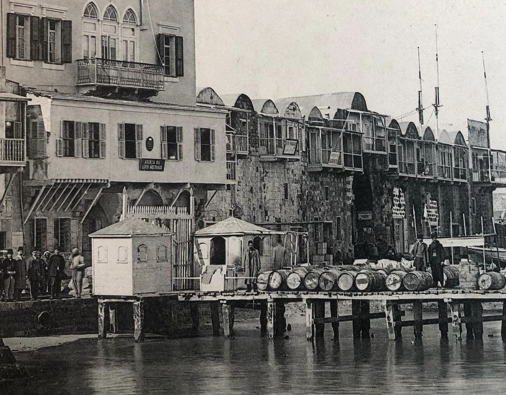
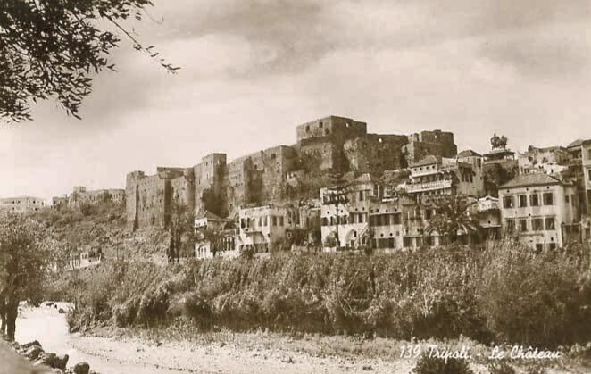
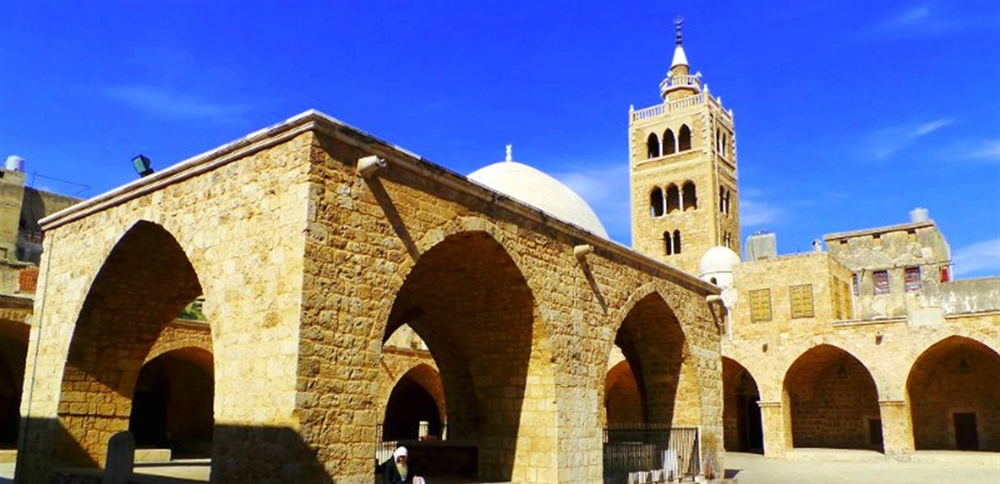

تاريخ ينبض بالحياة
تعتبر طرابلس ثاني أكبر مدينة في لبنان، وهي تتميز بنسيج معماري فريد يجمع بين الآثار الصليبية والمدارس والمساجد المملوكية والأسواق العثمانية. كل حجر في هذه المدينة يروي قصة حضارة مرت من هنا وترك بصمتها.
اقرأ المزيد عن التاريخ

طرابلس من الجو
ألقِ نظرة على جمال المدينة من زاوية مختلفة، حيث يتجاور البحر مع القلعة والأسواق.
روح المدينة
من أزقة الأسواق العتيقة إلى رحابة البحر، مشاهد تختزل سحر طرابلس.
ماذا قال الزوار؟
زرت طرابلس وانبهرت بأسواقها العريقة وكنافتها التي لا مثيل لها في العالم العربي.
ليلى م.
الرياض
المدينة القديمة تحمل روحاً لا تجدها في أي مكان آخر في لبنان، رائحة التاريخ تعبق في كل زاوية.
خالد ر.
دبي
قلعة طرابلس والجامع المنصوري أعادا لي الإحساس بعمق التاريخ العربي والإسلامي الشامخ.
سارة ح.
القاهرة
هل أنت مستعد لزيارة طرابلس؟
انضم إلينا في جولة سياحية تغوص بك في أعماق التاريخ، وتتذوق فيها أشهى الحلويات الشرقية، وتستمتع بنسيم البحر.
احجز موعداً الآناشترك في نشرتنا
احصل على أحدث الأخبار والفعاليات الثقافية في طرابلس مباشرة إلى بريدك الإلكتروني.